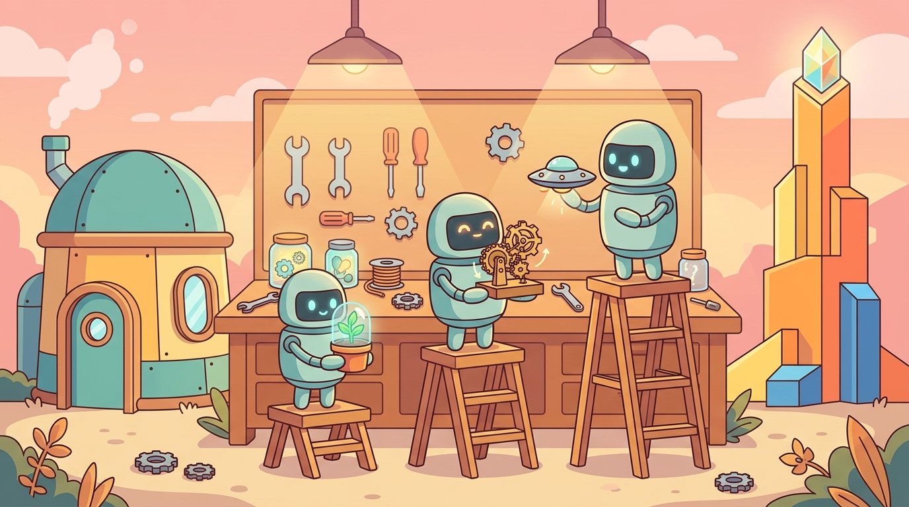

Part 2: Three Intermediate Projects
The 60-minute labs at the end of each chapter test single concepts. The capstone tests integration. There is currently nothing in between. These three projects fill the gap; they are designed to be completable in 1–2 weeks each, between Parts I/II/III/V/VIII.
Intermediate Project 1: Tokenizer Comparison Memo (after Part I, ~1 week)
Task: build a character-level tokenizer and a BPE tokenizer (from scratch, then via Hugging Face). Train both on a 10MB domain corpus (your choice: legal, medical, code, multilingual). Profile vocabulary size, fertility (tokens per character), coverage on rare words, and OOV rate.
Deliverable: 2-page technical memo with one figure comparing fertility distribution and one table comparing edge-case behavior.
Pedagogical purpose: students touch tokenization deeply enough to never confuse "characters" with "tokens" again, and they learn why model providers price by token, not character.
Intermediate Project 2: Prompt Engineering Pipeline with Cost-Latency Decision Table (after Part III, ~10 days)
Task: design a prompt engineering pipeline for a classification task (sentiment, toxicity, intent, your choice on a real dataset). Run an ablation across 5 prompt templates (zero-shot, few-shot k=2, few-shot k=8, chain-of-thought, role+CoT). Measure accuracy, output token count, latency, and cost per 1K predictions for each. Produce a decision table for which template to use under three constraints: 100ms latency budget, 500ms latency budget, 2s latency budget.
Deliverable: Jupyter notebook + decision table + 1-page summary.
Pedagogical purpose: converts Chapter 14 from "I read about prompt engineering" to "I can recommend a template under a constraint budget."
Intermediate Project 3: RAG Pipeline with Failure-Mode Diagnosis (after Part V, ~2 weeks)
Task: build a RAG pipeline over a real document corpus (arXiv PDFs, Confluence export, Wikipedia subset; minimum 500 documents). Implement RAGAS evaluation with at least three metrics (faithfulness, answer relevancy, context precision). Diagnose one failure mode in detail: pick a query where RAG returns the wrong answer, trace it through chunking → retrieval → reranking → generation, identify the root cause, and implement a fix that improves the failing query without regressing on a 50-query holdout set.
Deliverable: 3-page technical analysis covering the failure trace + fix + before/after metrics.
Pedagogical purpose: the failure-mode diagnosis is what separates RAG hobbyists from RAG engineers.